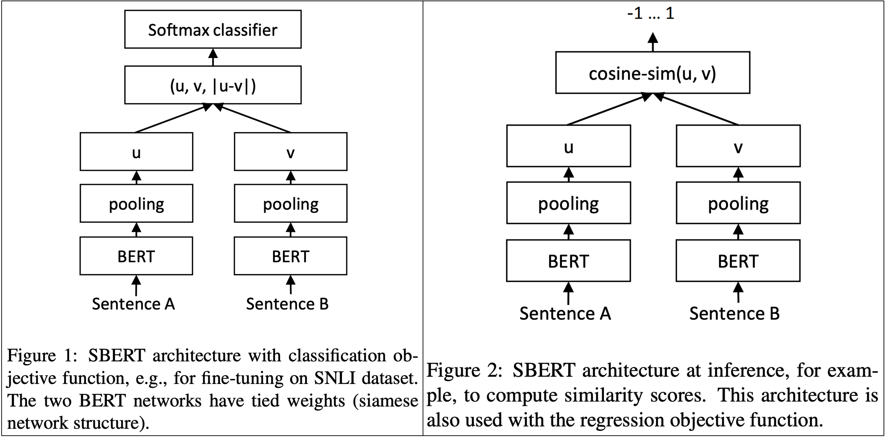
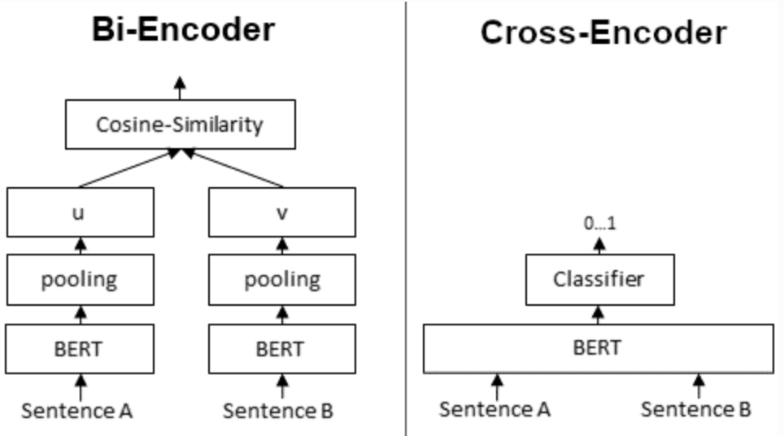

Deep dive · May 11 · LLM Evaluation · 7 min read
SBERT vs Cross-Encoder: Two Different Ways to Measure Meaning
Once lexical overlap stops being enough, the next choice is not simply “use embeddings.” It is deciding whether you want reusable sentence geometry or a heavier pairwise judge.
Once you move beyond lexical overlap, the next question is not whether to use a semantic metric. It is which kind of semantic metric you actually need.
SBERT
Sentence embeddings made semantic comparison scalable
Sentence-BERT (SBERT) is a modification of the BERT architecture designed for efficient semantic similarity comparison between sentences.
Unlike vanilla BERT, which is mainly built for classification-style tasks and is not efficient for repeated sentence-pair comparison, SBERT produces dense sentence embeddings that can be compared directly using cosine similarity. That makes it much more practical for tasks where we need to compare many sentences quickly.

SBERT Calculation
How SBERT Score Is Calculated
SBERT is based on a siamese architecture, where the same underlying model with shared weights processes two different input sentences in parallel.
During inference:
- sentence A is passed through one copy of the model
- sentence B is passed through another identical copy
- each sentence is independently encoded into a fixed-size embedding vector, typically using mean pooling
- the two sentence embeddings are then compared using cosine similarity or another distance metric
This structure is called siamese because it works like twins: two identical models operating side by side on different inputs.
Similarity(u, v) = (u · v) / (||u|| ||v||)A small Python example makes this more concrete:
from sentence_transformers import SentenceTransformer, util
model = SentenceTransformer("all-MiniLM-L6-v2")
candidate = "Sure, I will do it."
references = ["Sure, will do!", "Okay, I will do it."]
# Get embeddings
cand_emb = model.encode(candidate, convert_to_tensor=True)
ref_embs = model.encode(references, convert_to_tensor=True)
# Compute cosine similarity with each reference
similarities = util.cos_sim(cand_emb, ref_embs)
# => tensor([[0.6927, 0.7653]])This means the second reference is semantically closer to the candidate than the first one.
How SBERT Is Trained
Different training objectives create different similarity behavior
SBERT is fine-tuned using supervised sentence-pair data, such as Natural Language Inference (NLI) or Semantic Textual Similarity (STS) datasets. It supports several training strategies, and that matters because the training objective shapes the kind of similarity the model is good at.
Classification Loss
Useful for NLI-style sentence relationships
In NLI datasets, sentence pairs are labeled as entailment, contradiction, or neutral. The sentence embeddings are combined and passed to a classifier, often in a form like:
[Embedding A, Embedding B, |A - B|]A softmax layer is then trained to predict the correct relationship label.
Example:
- Sentence A:
"The patient missed the appointment." - Sentence B:
"The patient did not attend the visit." - Label: entailment
Another pair:
- Sentence A:
"The patient missed the appointment." - Sentence B:
"The patient attended the visit." - Label: contradiction
And another:
- Sentence A:
"The patient missed the appointment." - Sentence B:
"The clinic opens at 8 AM." - Label: neutral
What the model learns: It learns to use the sentence embeddings to predict whether the second sentence follows from, contradicts, or is unrelated to the first one.
Regression Loss
Useful for graded semantic similarity
In datasets such as STS Benchmark, sentence pairs are assigned a similarity score, typically in the range 0 to 5. SBERT compares the two sentence embeddings using cosine similarity, and that score is trained to match the gold similarity value using mean squared error (MSE) loss.
Example:
- Sentence A:
"The doctor prescribed antibiotics." - Sentence B:
"The physician gave the patient antibiotics." - Gold similarity score: 4.8 / 5
Another pair:
- Sentence A:
"The doctor prescribed antibiotics." - Sentence B:
"The weather is very hot today." - Gold similarity score: 0.2 / 5
What the model learns: It learns to make the cosine similarity between embeddings match the gold similarity score as closely as possible.
Triplet Loss
Anchor, positive, negative
A triplet consists of an anchor, a positive sentence similar to the anchor, and a negative sentence that is dissimilar. The loss function encourages the anchor to stay closer to the positive than to the negative by a margin.
Example:
- Anchor:
"How do I reset my password?" - Positive:
"What’s the way to recover my login?" - Negative:
"She is baking a cake."
What the model learns: It learns to place the anchor closer to the positive example than to the negative one by a margin.
Models Used in SBERT
General-purpose, retrieval-oriented, and multilingual options
The SBERT ecosystem includes several model families, and the right choice depends on whether you care more about general semantic similarity, speed, semantic search, or multilingual support.
General-purpose all-* models
Strong default baselines for semantic similarity
The all-* models were trained on a very large sentence-pair corpus and are intended as general-purpose sentence embedding models.
all-mpnet-base-v2provides some of the best quality among general-purpose SBERT models.all-MiniLM-L6-v2is much faster while still offering strong quality.
all-mpnet-base-v2 uses microsoft/mpnet-base as the base model, is trained on around 1 billion sentence pairs, and produces embeddings of dimension 768.
all-MiniLM-L6-v2 is based on a compact 6-layer version derived from microsoft/MiniLM-L12-H384-uncased, is also trained on around 1 billion sentence pairs, and produces embeddings of dimension 384.
Both use a contrastive objective, which pulls similar sentences closer together and pushes dissimilar ones farther apart in embedding space.
The core intuition is simple: if (A, B) is a similar pair and (A, C) is not, the model learns to make cosine_similarity(A, B) high and cosine_similarity(A, C) low.
Semantic search model: multi-qa-mpnet-base-cos-v1
Built more for retrieval than for generic similarity
This model is tuned more specifically for semantic search and question-answer retrieval.
- base model:
microsoft/mpnet-base - fine-tuned on about 215 million question-answer pairs
- embedding dimension: 768
- training objective: contrastive learning
Multilingual model: paraphrase-multilingual-mpnet-base-v2
Useful when similarity must work across languages
This model is useful when sentence similarity must work across multiple languages. It follows a multilingual student-teacher style approach, where a strong English paraphrase model acts as the teacher and a multilingual transformer such as XLM-RoBERTa acts as the student.
The student is trained to mimic the teacher’s embedding behavior across many languages, allowing the model to produce semantically useful sentence embeddings in 100+ languages.
| Sentence A | Sentence B | Label |
|---|---|---|
"How do I reset my password?" |
"What’s the way to recover my login?" |
Paraphrase (1) |
"He is running." |
"She is baking a cake." |
Not paraphrase (0) |
The above table gives a simple example of the kind of paraphrase supervision used to train the model. Sentence pairs that express the same meaning are labeled as paraphrases, while unrelated pairs are labeled as not paraphrases. Training on examples like these helps the multilingual model learn which sentence pairs should be placed closer together in embedding space, even when the wording differs.
Cross-Encoder
Joint pairwise scoring instead of reusable embeddings

A Cross-Encoder works differently from SBERT. In a bi-encoder / siamese setup, sentence A and sentence B are encoded independently into sentence embeddings u and v, and those embeddings are compared using cosine similarity.
In a Cross-Encoder, both sentences are passed into the transformer together during inference:
[CLS] Text 1 [SEP] Text 2 [SEP]The model then outputs a single similarity score, typically between 0 and 1.
The tradeoff
- SBERT: scalable, efficient, reusable embeddings
- Cross-Encoder: often stronger pairwise scoring, but slower and heavier at scale
Cross-Encoders often achieve better pairwise scoring quality than bi-encoders, but they do not produce reusable sentence embeddings. That makes them far less practical for indexing, retrieval, or large-scale repeated comparison.
A sample Cross-Encoder input can look like this:
{
'question': 'how to transfer bookmarks from one laptop to another?',
'answer': 'Using an External Drive Just about any external drive, including a USB thumb drive, or an SD card can be used to transfer your files from one laptop to another. Connect the drive to your old laptop; drag your files to the drive, then disconnect it and transfer the drive contents onto your new laptop.',
'label': 0
}Model used for Cross-Encoder evaluation
stsb-roberta-large
For evaluation, a strong Cross-Encoder model choice is stsb-roberta-large. It was trained on the STS Benchmark dataset and is commonly chosen because of its strong semantic similarity performance.
Cross-Encoder score calculation in Python
A small example
from sentence_transformers import CrossEncoder
model = CrossEncoder("cross-encoder/stsb-roberta-base")
scores = model.predict([
("It's a wonderful day outside.", "It's so sunny today!"),
("It's a wonderful day outside.", "He drove to work earlier.")
])
# => array([0.60443085, 0.00240758], dtype=float32)The first pair receives a high similarity score, while the second pair is correctly judged as much less similar.
Why This Matters
Not all semantic metrics are interchangeable
An SBERT-style bi-encoder and a Cross-Encoder can both be called semantic metrics, but they solve different operational problems. One is better for repeated large-scale comparison. The other is often stronger when local pairwise judgment quality matters more than reuse.
SBERT is often the better systems choice. Cross-Encoders are often the better pairwise judgment choice.
Practical Takeaway
Choose based on the actual workload
Use SBERT when you need efficient sentence embeddings for many comparisons, ranking, or retrieval. Use a Cross-Encoder when you want stronger pairwise scoring and can afford the extra computation.
Resources for Future Exploration
Benchmark strength is only the starting point
If you want to test other semantic similarity models, these are good places to start:
- Sentence Transformers pretrained SBERT model list for general-purpose, multilingual, retrieval, and semantic-search oriented bi-encoder models.
- Sentence Transformers pretrained Cross-Encoder model list for pairwise ranking, reranking, STS, and classification-style models.
- MTEB leaderboard for a broader benchmark comparison across embedding models on retrieval, clustering, reranking, and semantic similarity tasks.
A practical strategy is simple: pick a strong benchmark model, test it on your own data, and compare quality, speed, and scalability together. The best benchmark model is not always the best model for your actual workload.
References
Selected papers and notes
- Reimers, N., and Gurevych, I. (2019). Sentence-BERT: Sentence Embeddings using Siamese BERT-Networks.
- Devlin, J., Chang, M.-W., Lee, K., and Toutanova, K. (2019). BERT: Pre-training of Deep Bidirectional Transformers for Language Understanding.
- Thakur, N., Reimers, N., Rücklé, A., Srivastava, A., and Gurevych, I. (2021). BEIR: A Heterogeneous Benchmark for Zero-shot Evaluation of Information Retrieval Models.
Part of this series